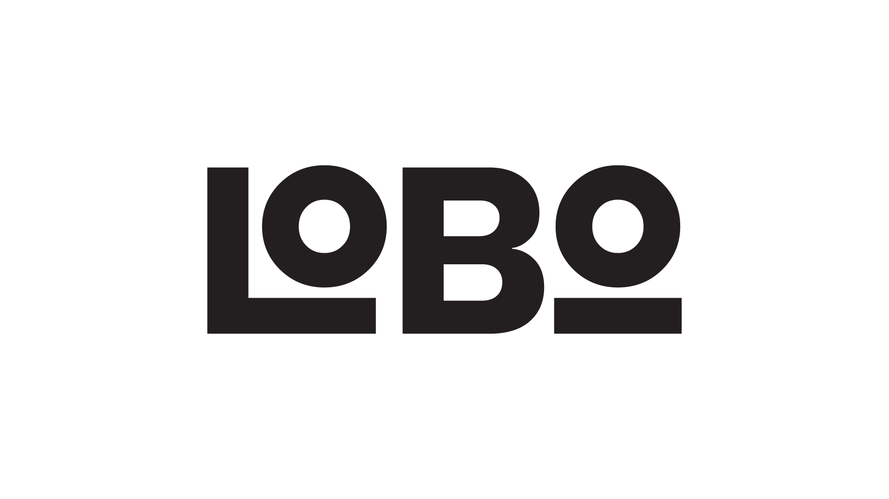

Miguel Lobo

Bem-vindo!
пожалуйста!
You are welcome!
Vítejte!
¡no hay de qué!
Dobrodošli!
Home
About
Education
Work
Video Portfolio
Social Media
Documentary | Faculty of Fine Arts of Porto (18/20)
Video Editing and Post-Production | Lisbon School of Design (15/20)
Mick Audsley Editing Workshop | Fest Film Lab
Pack Design e Graphic Production – Adobe Creative Cloud | Faculty of Fine Arts of Porto (17/20)
Marketing, Advertising and Public Relations | Instituto Superior de Entre Douro e Vouga (16/20)
Business Skills | Veleučilište Baltazar Zaprešić, Zagreb
Forecasting of Markets | International Business School of Bulgaria
Documentary Producer | The Blind Spot
Multimedia Design Internship (18/20) | Brand Creative Store
Armed to the Teeth -
The New European Order
Interior Design -
Lisbon School of Design
"Flowers" -
Contemporary Essay
Climate Predictions
From 1939-2018
Vimeo
Youtube
Behance
Email